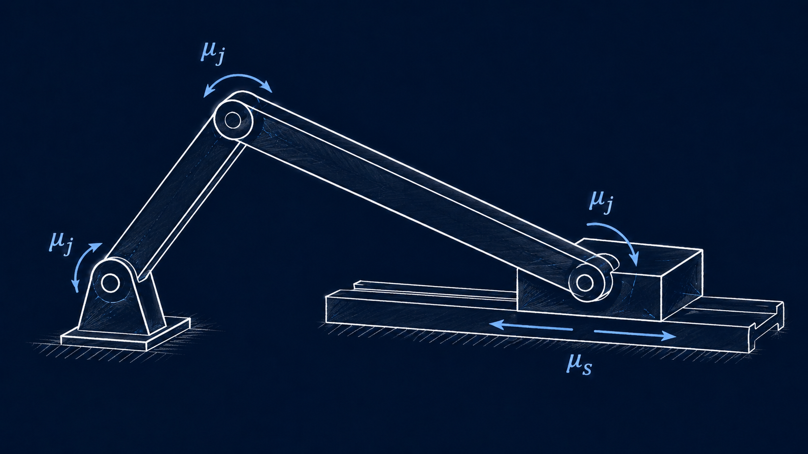

Research Direction
Damping Identification and Design
We take on the challenge of identifying distributed and local damping effects.

We develop methods to identify spatially distributed damping using full-field measurements such as Digital Image Correlation (DIC) together with the Virtual Fields Method (VFM). By reconstructing where and how energy is dissipated in a structure, we aim to move from damping measurement to informed design of tailored damping treatments and structures.